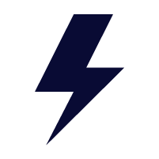
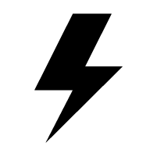
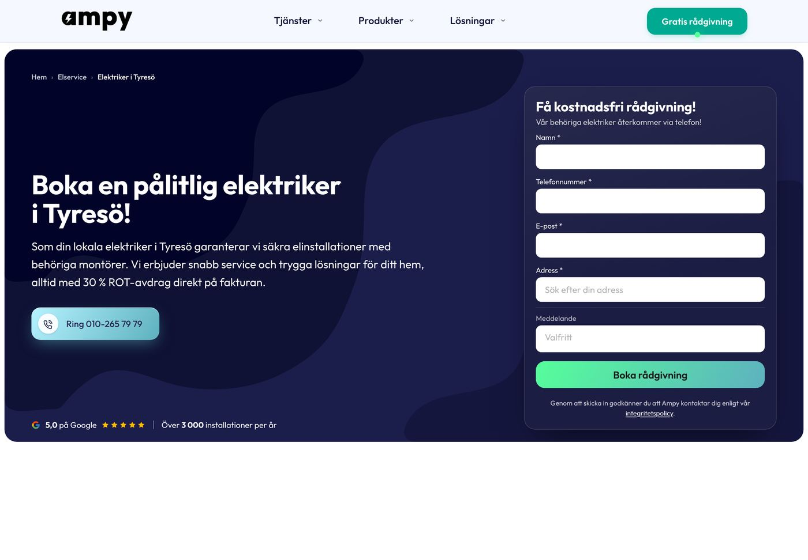
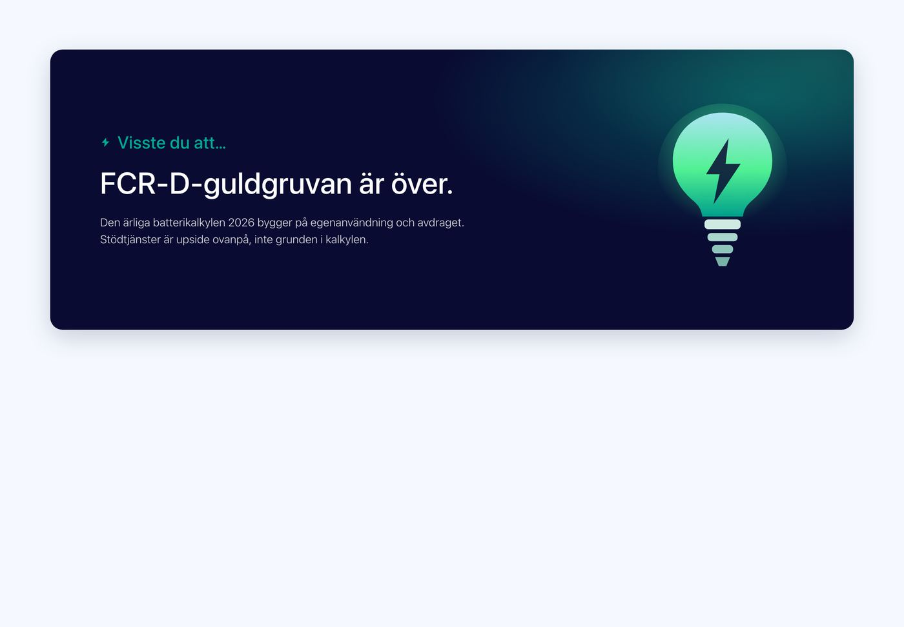
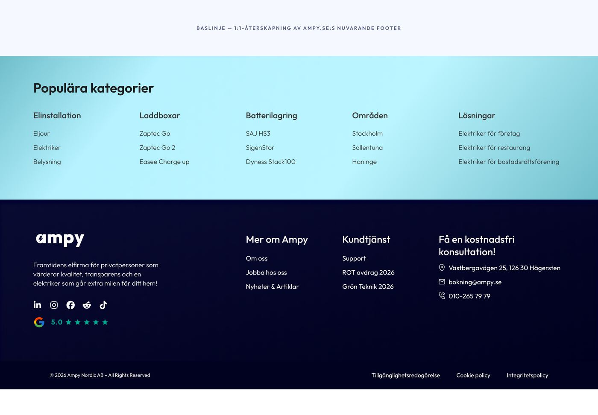

Ornament och ikoner
Logotypen i tre lockups, blixten som enda ornament, en ikonfamilj med 1,75 px streck. Vågor, blobbar och auroror finns i blocken men har ingen token; här står var de finns och vilka som byts ut.
inventering/brandbook.md + brandbook.json (Ampy Brandbook (6).pdf, 26 sidor, 2025-10-01: s.3 till 5 logo, s.11 gradienter, s.16 till 18 ikoner, foto, former), site/brand/ (kanoniska exporter ur inventering/brand/), konsolidering/form-djup-rorelse.md (tabellen Ornament), system/ikoner.svg (S2:s sprite, 22 symboler), inventering/tidigare-dokumentation.md (skill-referensens bolt.svg och "banned default").
Logosystemet
Tre lockups enligt brandboken s.3: Main version (wordmarken "ampy" med blixten skuren i a:t), Simple mark (a + blixt) och Glyph (blixten). Boken visar wordmarken i midnight; produktionens logofiler (main-form och booking ampy-logo-dark.png 1600×468, tack-sidans Ampy-logo.png 701×201) är rent svart #000000, och den midnight-färgade exporten AMPY-01 används inte av någon källa. Ingen vektorexport finns (bara .ai och PNG). Filerna nedan är de som systemet använder.

ampy-wordmark-midnight-701x201.pngUr LOGO/COLOURS/AMPY-01, uppmätt dominant färg #090b34 (boken säger #090b32). På ljus yta.

ampy-wordmark-white-2917x834.pngUr B&W/Ampy logotype, identisk med main-forms
ampy-logo-white.png. På midnight och på foto med scrim.ampy-mark-midnight-201.pngUr AMPY-07. Profilbilder i sociala medier: bara simple mark eller main logo i godkänd färg (s.22).
ampy-mark-white-834.pngUr B&W/LOGOS-23.

ampy-glyph-midnight-201.pngUr AMPY-08. Blixten ensam; se nedan för var den får användas.

ampy-glyph-white-834.pngUr B&W/LOGOS-24. Den här sajtens märke i navigationen är den, 14 px i en midnight-cirkel.

ampy-glyph-black-201-favicon.pngUr B&W/Ampy-favicon. Rent #000000, den enda svarta filen som behålls (favicons renderas i svart av OS:et ändå).
Exporterna i LOGO/COLOURS/ har andra hex än boken: cobalt-wordmark #136cff, neon #00ff8e, lime #70ee00, teal #37b2c0, midnight #090b34. De färgade varianterna (cobalt, neonmint, springgreen, sekundärteal) ligger i inventering/brand/ som dokumentation och används inte (beslut B1: teal är ensam accent, cobalt och lime finns inte i produktion).
Friyta och minsta storlek
Friyta = bokstaven a:s höjd och bredd runt om (brandbok s.4). I filen 701×201 mäter a:t 126×122 px (uppmätt på pixelmasken), så friytan är 18 % av wordmarkens bredd på alla sidor; den streckade ramen här är ritad med det måttet. Bokstavsmellanrummet är 20 % av a:s bredd, vilket stämmer i filen: 24 px mellan a och m. Minsta storlek anges inte i boken och står som [GAP]. Minsta uppmätta användning i produktion är headerns och footerns logotyp på 130 px bredd (website-blocks, footer-cro); glyphen finns som favicon-export (201 px).
Felaktig användning (brandbok s.5)
Åtta förbud, ordagrant ur boken. Rutorna visar wordmarken med felet påfört i CSS, överstruken.
Blixten: det enda ornamentet
Brandboken (s.16 och s.18) säger att ikoner och former ska härledas ur blixten eller a:t. I produktion bär bara ett block blixten som ornament: visste-du-att-kickern (18 px solid blixt-SVG framför "Visste du att", "sanktionerat motiv"). Skill-referensens bolt.svg och artikelmallens handritade AmpyLogo.jsx är egna teckningar, inte byråns, och utgår. Regeln: blixten är det enda ornamentet, i sin egen teckning, som glyf i midnight eller vitt, aldrig i gradient, aldrig som vattenstämpel bakom en centrerad vit rubrik (det är "AI-slop-defaulten", se B9).
ik-bolt i spriten: linjeversionen, 1,75 px, för ikonraderKälla: visste-du-att.css + Bricks-JSON (kicker 24/500 teal + 18 px blixt); brandbook s.3 (glyph), s.16 (ikoner), s.18 (former "härledda ur blixten eller a:t; ramar och lyfter innehåll; inga godtyckliga rotationer"). Skill-referensen: tidigare-dokumentation.md rad 38 ("blixt-vattenstämpel, egen bolt.svg, inte brandbokens glyf").
Vågor, blobbar, auroror och pulser
Ingen av dessa har en token, och de är olika i varje block. Tabellen Ornament i form-djup-rorelse.md listar dem; här är de renderade ur källbilderna med status. Certificates-regeln "inline-SVG med preserveAspectRatio=none så den aldrig klipps" är den enda hållbara tekniken om en våg ska finnas alls.

programmatic-bg-overlay-blue.svg (80 % nere höger) och GT:s Vector-2-2.svg som ger 404.


cta-bgwave.svg (652×273, #5eb1bf till vit, 44 % av kortet) och cta-overlay.svg (277×100, .81, bakom porträttet 50 %). Filerna ligger i site/bilder/block/. Sekundärteal som dekor är tillåten (B16); vågen bär ingen text.

aurora-top/bottom.svg (crystal blue och sublime green mot sky mist) ovanpå --ampy-aurora-light. Brandbokens mesh-omslag (midnight, cobalt, neon, lime; s.1, 22, 23, 26) är förlagan. Beslut B11: stannar i kundflödet, aldrig som sektionsbakgrund på sajten.
--ampy-bg-dark-glow, B9); här behålls den (slutaudit GO).
Pulser
Fyra oändliga animationer i källorna, tre olika pulser: headerns CTA-prick (10 px mint, 1,6 s ease-in-out, hero-1 och website-blocks), ring-knappens chip (ampyRing 2,8 s, vit ring 0 till 9 px, cta-website), eljours statuspill (2 s ease-out, scale 1 till 2, plus mobil-CTA-puls scale 1 till 2,6) och tack-sidans halo (4 s, den enda oändliga animationen utanför chippen). Alla fyra stängs av under reduced-motion (eljour: display: none på pulserna).
system/components/
En puls per vy. Pulsen sitter på det som är levande (jour öppen, ring nu), aldrig på dekor.
De två gradienterna och scrims
Fjorton gradienter i källorna blev två tokens (Färg) och tre foto-scrims (Form och djup). Brandbokens fyra referensgradienter (s.11: cobalt till midnight, lime till cobalt, sekundärteal till lime, neon mint till midnight) används inte av någon källa; produktionens handlingsgradient (neon mint till sekundärteal) är den enda som lever. Gradient i text finns inte.
120° #55ff9a till #5eb1bf. Sajtens primärknapp, 10+ källor. Bara på knappar.
120° #b6f2ff till #5eb1bf. Ring-knappen.
Fyra radialer på sky mist. Bara tack, offert accepterad, bokning (B11).
Foto-veil, aldrig som yta. Två till: -strong och -light.
Ikonfamiljen
En familj för alla exempel: system/ikoner.svg, 22 symboler på 24-rutnät, stroke 1,75, runda ändar och hörn, fill: none, stroke: currentColor. Undantag: ik-star (fylld, betygsstjärnor, källa hero-1 index.html:280) och ik-google (fasta färger, G-loggan i proof-raden). Pilen kommer från cta-website offert-cta.html (16-rutnät skalat 1,5), luren från ring-cta.html, bocken från elcentral-kollens __check, chevronen från eljour-blockets __chev, i-ikonen från elcentrals info-ruta, varningen från eljours __safety. Källorna kör streck 1,6 till 3; 1,75 är mitten av auktoritet 1-blocken.
Brandboken (s.16) vill ha solida ikoner i cobalt. Inget byggt block följer det: alla använder linjeikoner. Systemet följer det byggda och flaggar konflikten till brandbok v2 (B1). Ikoner ritas i bläck (midnight på ljust, vit på mörkt) eller i teal core som accent, aldrig i gradient.
Storlekar
16 i knappar och pills (cta-website pil 16, elcentral pill-ikon 16, LED tips-chip 16), 17 i ring-chippen (ring-cta.css:43), 18 i popover-rader (energycalc share-pop), 20 i selector-chevron (LED), 24 som bas. Alltid aria-hidden="true" när texten bredvid säger samma sak.
<svg width="16" height="16" aria-hidden="true"><use href="../../system/ikoner.svg#ik-arrow-right"/></svg>
<!-- kräver http (extern <use> blockeras på file:// i Chromium); i Bricks/FluentSnippets: inline:a symbolen eller ladda spriten en gång i sidfoten -->Det här får inte finnas
- Logotypen ur
site/brand/, i midnight på ljust och vit på mörkt, med friyta = a:s höjd. - Blixten som enda ornament, i byråns teckning, och bara där den betyder något (kicker, märke).
- Ikoner ur spriten, 1,75 px, i bläck eller teal core; storlek 16 i knappar, 24 som bas.
- Svarta logofiler på sajten (produktionens #000000-exporter), egna blixtar, logotypen som vattenstämpel.
- Vågor, blobbar och auroror som dekor på tjänstesidor; ytgradienter (prefooter, footer, certificates-bandet).
- Ikonbibliotek, gradientikoner, emoji, fler än en puls per vy.
Beslut som rör ornament och ikoner: B1 accent och brandbok v2 (ikonfärg s.16, gradienter s.11), B9 glöd, B11 aurora, B12 stjärnfärg, B16 sekundärteal som dekor. [GAP]: minsta logostorlek (brandboken anger ingen).